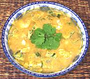

|
Hot & Sour Shrimp Soup #2Thailand - Kang Som Koong | ||||
| Serves: Effort: Sched: DoAhead: |
6 soup ** 30 min Most |
A popular soup, flavorful and substantial. It is often served with cubes of Acacia Leaf Omelet in it. For a different Hot & Sour Shrimp Soup, see Hot & Sour Shrimp Soup #1. | |||
|
6 7 4 4 4 3 1 1 1-1/2 |
oz oz T T c T t T |
Shrimp Fish Filet (1) H&S Curry Paste (2) Tamarind Paste (3) Water Fish Sauce (4) Palm Sugar (opt) Acacia Omelet (5) Lime Juice |
Do-Ahead - (can be made a day of few ahead)
|